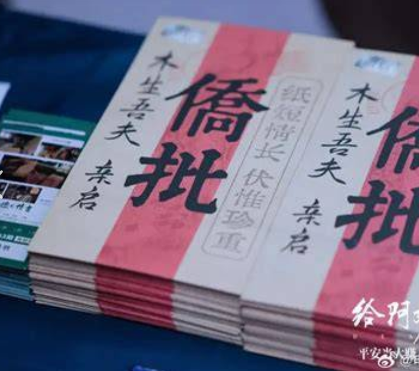
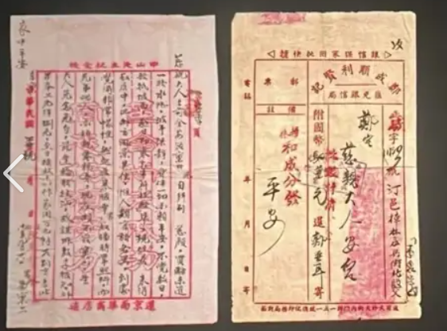
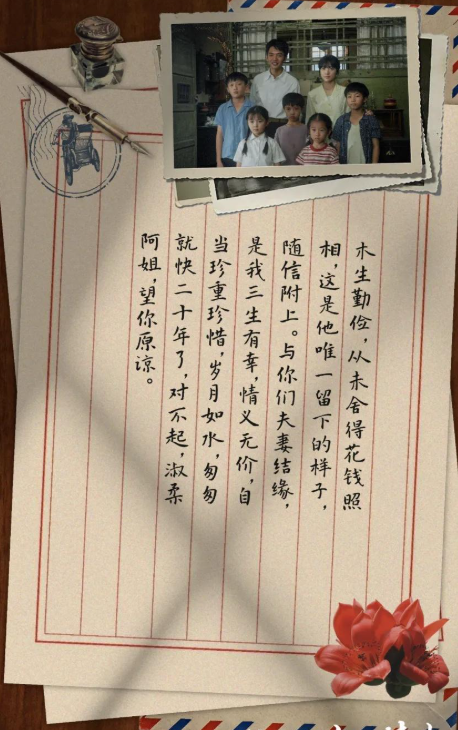
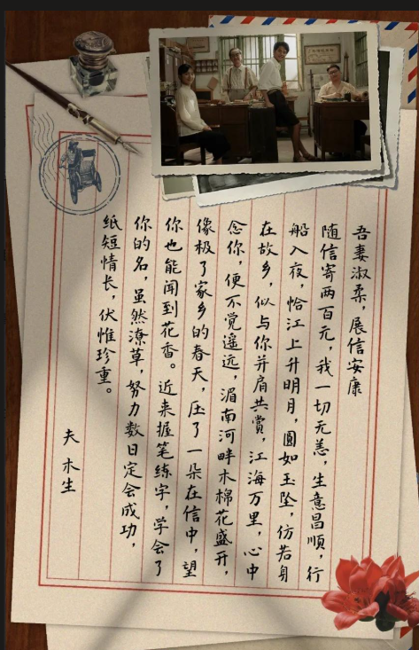

Visual Translation
从“干净信纸”升级为“可触摸的信件实物”
新增的生成器不再只输出白底信纸，而是按真实信件结构生成：封套、收据栏、红色竖线稿纸、邮戳、旧照片、墨迹、折痕、阴影和桌面道具。




Web Reference Notes
全网参考提炼
Realism V2
实物级信件样张
这一组不再用符号化卡片，而是模拟真实书信的拍照/扫描效果：纸张厚度、折痕、油墨扩散、红线错位、照片压痕、邮戳透印和边角磨损。
侨批封套 · 实物封面
纸短情长
伏惟珍重
伏惟珍重
侨批
木生吾夫 亲启
吾妻淑柔 缄
收讫竖排家书 · 照片叠纸
吾妻淑柔，展信安康。随信寄两百元，我一切无恙。生意昌顺，行船入夜，恰江上升明月。
夫 木生批信票据 · 旧档案
- 收件人
- 缪宏谟
- 寄件人
- 以撒
- 年月日
- 2002.05.20
船过月明，江上升明月。愿你平安。
收妥航空邮简 · 折叠邮路
CANTON / HONG KONG / HOME
8 分
路远风急，展信如晤。纸短情长。
Generated Templates
18 种真实信件模板输出
01
竹简卷轴
古代密信，竹简外卷 + 竖排正文。
密
山长水远，见字如晤。今托鸿雁，寄此寸心。
02
朱批奏折
折页封套 + 黄纸朱批，适合权谋与正式信件。
奏
臣谨奏。夜雨未歇，军情如火，伏乞明断。
朱批
03
宋式花笺
淡彩花笺 + 香囊封套，温柔、诗意、含蓄。
花笺
一枝春色，藏在袖中。愿君展信时，亦闻花气。
04
黑金诏书
黑底金字、封签与金线，适合庄重、神秘叙事。
令
奉天承运，今夜启封。所载之事，不可告人。
05
航空邮简
红蓝斜纹边框，适合跨城、远方、旅途来信。
邮票
CANTON → HONG KONG → HOME
展信安。路远风急，纸短情长。
06
电报急件
短句、编号、时间戳，适合紧急消息或剧情转折。
吾妻平安 STOP 船过月明 STOP 速回信 STOP
07
旅行明信片
一面图像，一面短笺，适合轻量分享与回忆。
旧街照片
从这座城寄给你一阵风。
8分
08
战时审阅家书
牛皮纸、折痕、审阅章和遮挡线，适合沉重叙事。
家书第七号
平安二字，抵过万金。余事不可详述。
审阅
09
侨批封套
适合信箱封面、投递包、未拆封预览。
纸短情长
侨批
木生吾夫 亲启
吾妻淑柔 寄
10
旧票据批信
适合“档案、回忆、凭证式”的故事信件。
收件人缪宏谟
寄件人以撒
年月日2002.05.20
字迹潦草，纸面有红印和旧折痕。
验讫船过月明，江上升明月。愿你平安。
收妥
11
竖排照片家书
适合真实家书、怀旧回忆、亲密叙事。
家庭照片
木生勤俭，
从未舍得花钱照相，
这是他唯一留下的样子。
12
桌面实物长信
适合导出“信封 + 照片 + 信纸”的完整长图。
旧办公室照片
吾妻淑柔，
展信安康。
随信寄两百元，
我一切无恙。
13
红柬请启
红纸黑字，适合喜帖、邀约、郑重告白。
谨启
请柬
谨订于月明之夜，敬候君临。
14
钢笔蓝墨信
蓝黑墨水、横线纸、私人信封，适合现代手写。
PRIVATE
今天的云很低，我在窗边写下你的名字。
15
打字机公函
牛皮纸公文袋 + 打字机正文，理性、克制。
CONFIDENTIAL
RE: THE LETTER YOU NEVER SENT.
16
现代便利贴
便签、透明胶带、拍立得，适合轻量留言。
memo
冰箱里有汤，记得热一下。
17
邮件打印件
电子邮件打印、回形针、二维码，现代档案感。
MAIL
Subject: 那封没有发出的邮件
18
赛博像素信
像素字体、霓虹边框、数据封包，未来感信件。
PKT-0520
HELLO_FROM_2099
LOVE_PACKET_SENT
Generator UI
编辑器中的真实信件生成面板
木生勤俭，从未舍得花钱照相，这是他唯一留下的样子，随信附上。
与我们夫妻结缘，是我三生有幸。情义无价，白当珍重珍惜。
岁月如水，匆匆就快二十年了，对不起，淑柔阿姐，望你原谅。
Operation Logic
生成真实信件的操作逻辑
选择模板
从 P5-P8 选择真实信件类型，也可按信箱主题自动推荐。
导入内容
读取当前信件的标题、正文、收信人、日期、照片、印章。
真实化处理
自动生成红线、竖排、折痕、纸斑、墨迹扩散、邮戳和阴影。
导出/保存
可导出长图，也可保存为新的信纸风格供编辑器复用。